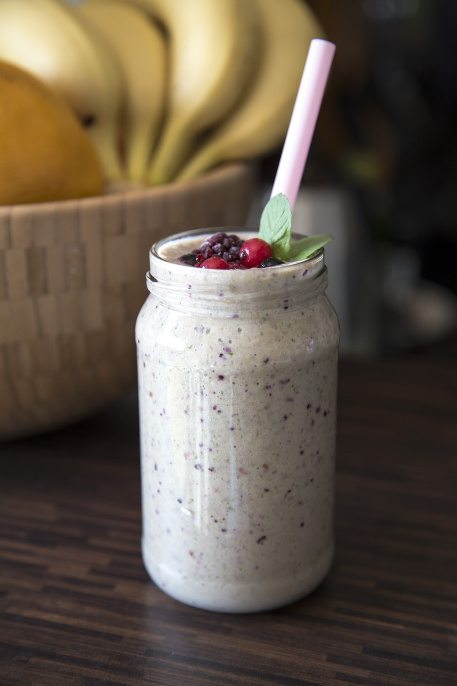

My Shake

Description
This is a basic Recipe of a tasty protein shake.
Also it brings this supplementary nutrition on the next level
Ingredients
- a spoon of your favourite portein powder
- fruit like banana or some berrys
- 500 ml milk (you can use oatmilk or others as well)
- a tip of cinammon
Steps
- measure your protein powder
- put the fruit in the mixer and blend it
- add the cinammon, milk and protein powder
- blend it up together
- enjoy
Back